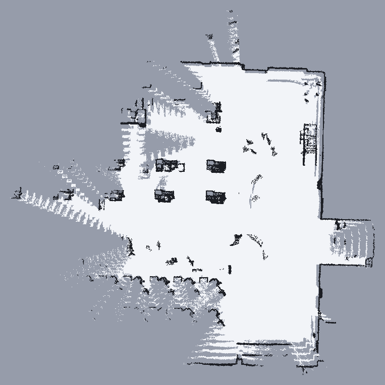

基于 Livox MID-360 的
室内导航系统
驱动 · FAST-LIO 建图 · 2D 栅格 · AMCL 定位 · A*/DWA · 串口底盘 · Qt GUI
5 分钟答辩 · 姓名：__________ · 2026-11
一、整体技术方案
目标：从传感器到轮子，形成一条可实车运行的闭环链路。
感知
Livox MID-360
10 Hz 点云 + IMU
建图
FAST-LIO
紧耦合 LiDAR-IMU
定位
map_server + AMCL
LIO 提供 odom
决策/执行
A* + DWA + 行为树
20 字节串口帧
为什么这样选
MID-360 性价比高、自带 IMU；FAST-LIO 在室内弱纹理环境比纯 2D 激光更稳。
模块化
驱动、建图、定位、决策、底盘、GUI 独立包，便于定位问题和替换算法。
可调试
保留原始点云、局部代价、全局栅格、TF、节点状态和底盘串口诊断。
二、系统流程与 TF
/livox/imu
/cloud_registered
/scan → AMCL
/plan → /cmd_vel
速度闭环
TF 链
map → odom → base_link
odom → camera_init → body → livox_frame
AMCL 负责 map→odom；lio_odom_bridge 负责 odom→base_link；FAST-LIO 发布 camera_init→body。
关键设计
- 导航里程计用 FAST-LIO，不用底盘指令积分。
- AMCL 用点云投影的 /scan 做地图级修正。
- GUI 同时监控 TF、节点和串口状态。
三、建图与地图

流程
- 启动 mapping.launch.py
- 低速行驶，GUI 开始建图
- 保存为 pgm/yaml，导航端加载
高度带
z/local_z：0.7~2.0 m，过滤地面和过低回波。
空洞填充
被空闲格完全包围的未知块填为空地，避免稀疏点云被当成墙。
障碍去噪
删除孤立单格和小障碍簇，保留连续墙线。
四、定位与导航策略
全局规划
A* + 膨胀代价 + 离墙权重 + 路径平滑；allow_unknown=false。
局部控制
DWA 采样；动态障碍触发局部 A* 绕行；行为树负责恢复。
到点判定
距离 0.12 m + 朝向 0.35 rad + 稳定保持 1 s，避免“扫过目标”误判。
问题：轨迹像一串 C
DWA 只采样前进速度，大角度偏差时会用前进弧线“绕”到路径方向；到点转向时又有残余线速度。
改法
- 航向偏差 > 0.8 rad 先原地转；
- 到点转向时线速度立即归零；
- 增加路径切向评分和曲率惩罚。
结果：起步/目标附近不再画圈，直道和转弯更连续。
五、实车问题与解决
1. 底盘不动 / 串口变号
ttyACM 编号会变化，导致 bridge 进入 fake 模式。改为 by-id + /dev/minipc udev 别名，并关闭静默降级。
2. 能发帧但车不走
遥控器未切 NAV/自动模式。加入底盘诊断、串口监视和运动测试工具，先验证“帧→轮子”链路。
3. 方向反 / 车头偏 180°
实测角度字段只有 yaw_speed 有效；线性、角速度取反；base_to_body_yaw=π 对齐车头。
4. 长廊定位跳变 / 打滑漂移
GUI 增加“关闭全局重定位”；FAST-LIO 提高迭代与特征保留，关闭在线外参估计，降低打滑时的漂移。
RViz 看不到代价
QoS：Volatile vs Transient Local，统一配置。
未知格变“墙”
空洞填充 + 去噪 + 只膨胀已知空闲格。
误判到达
距离 + 朝向 + 稳定时间三重确认。
六、关键参数与取舍
为什么不是越大越好
- 光滑地面速度过高会空转，LIO 里程计漂移；
- 膨胀半径过小会贴墙，过大会堵窄通道；
- 前视距离过大会切内角，过小会左右摆。
调试顺序
- 先验证串口/底盘运动；
- 再验证 TF 与里程计方向；
- 最后调规划膨胀、速度和到点判定。
原则：先保证“车真的按预期动”，再追求“路径更漂亮”。
七、完成情况
已完成
- OK Livox 驱动 + FAST-LIO 建图
- OK 2D 栅格、地图保存、空洞/噪声处理
- OK LIO + AMCL 定位与 TF 链
- OK A* + DWA + 行为树导航
- OK 底盘串口桥与运动测试
- OK Qt GUI、TF/节点诊断、重定位开关
仍需加强
- 局限 长廊 AMCL 全局重定位不稳
- 局限 光滑地面轮子打滑导致 LIO 漂移
- 局限 缺少真实轮速编码器融合
- 局限 实车视频待补充
实车底盘运动测试已通过：前进、转向均能产生实际运动，方向与命令一致。
八、如何借助 AI
理解与检索
快速梳理 10 个 ROS 包、TF 链、launch 参数和配置依赖，减少“全局搜索—猜测”的时间。
诊断与工具
生成串口监视、旋转扫描、运动测试、TF/节点诊断脚本；把“车不动”拆成可验证的小步骤。
文档与复盘
整理命令手册、参数说明、问题记录和提交历史，方便复现和交接。
我的使用边界
- AI 给假设，实车给结论：每次改完必须编译、看 TF/话题、做运动测试。
- 不直接把 AI 建议当答案：参数要结合车体尺寸、地面和传感器安装验证。
- 保留失败记录：哪些方案试过、为什么放弃，比只保留最终参数更有价值。
九、总结与反思
系统集成
导航不是单个算法，驱动、TF、时间戳、坐标方向、串口协议任何一层错都会表现成“算法不行”。
数据闭环
先做可观测性：原始点云、代价地图、TF、底盘状态。能看见问题，才谈得上调参。
安全边界
低速验证、急停、速度限幅、到点确认；宁可慢，不要失控。
下一步
引入真实轮速/编码器与 LIO 融合；增加长廊场景的定位评估；补充实车视频和可重复实验数据；把参数标定流程脚本化。
谢谢，欢迎老师和算法组同学提问。
附：可能被问到的问题
- 为什么用 FAST-LIO + AMCL？
LIO 提供高频、连续的 odom；AMCL 用地图像做全局修正。两者职责分离，便于定位问题。 - 为什么关闭全局重定位？
长廊弱特征，全局撒粒子容易跳变；关闭后用初始位姿 + 局部跟踪更稳。 - 为什么 DWA 会画 C？
只采样前进速度，大角度偏差时用弧线代替原地转；已加原地转、切向评分和曲率惩罚。
- 空洞为什么能填成空地？
只填被空闲格完全包围、且不接触障碍和边界的未知连通块，避免填掉墙后盲区。 - 18 cm 半径怎么定膨胀？
规划膨胀 0.40 m，比半径多 0.22 m 余量；局部栅格膨胀 0.35 m。 - 最大风险？
打滑和缺少真实轮速反馈；下一步做轮速融合和场地特征增强。